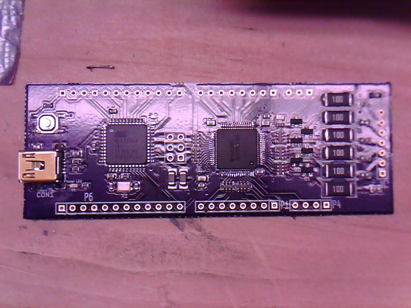

Here is an overview of what our project is
stuff things ideas
The Battery Management System has two main IC’s on it. One is an ATMEGA32u4. The other is a
Here we talk about how to configure out solution to match your system
The current hardware design is limited in that it requires minor modifications to work with different numbers of bettery cells. In general, the BMS chip requires that for configurations less than 6 cells, the highest cell on the battery needs to be shorted to all the cell inputs higher than it. There are on board jumpers to accomplish this. Safety is maintained by shorting the cell inputs only after passing through a fuse.
todo: insert images of schematic and how to modify the board for fewer cells
Here will be documentation of the spi reads/writes for controlling the bms chip
Here is an example from arduino.cc showing sphinx’s capability to show code snippets with highlighting
const int slaveSelectPin = 10;
void setup() {
// set the slaveSelectPin as an output:
pinMode(slaveSelectPin, OUTPUT);
// initialize SPI:
SPI.begin();
}
void loop() {
// go through the six channels of the digital pot:
for (int channel = 0; channel < 6; channel++) {
// change the resistance on this channel from min to max:
for (int level = 0; level < 255; level++) {
digitalPotWrite(channel, level);
delay(10);
}
// wait a second at the top:
delay(100);
// change the resistance on this channel from max to min:
for (int level = 0; level < 255; level++) {
digitalPotWrite(channel, 255 - level);
delay(10);
}
}
}
void digitalPotWrite(int address, int value) {
// take the SS pin low to select the chip:
digitalWrite(slaveSelectPin, LOW);
// send in the address and value via SPI:
SPI.transfer(address);
SPI.transfer(value);
// take the SS pin high to de-select the chip:
digitalWrite(slaveSelectPin, HIGH);
}